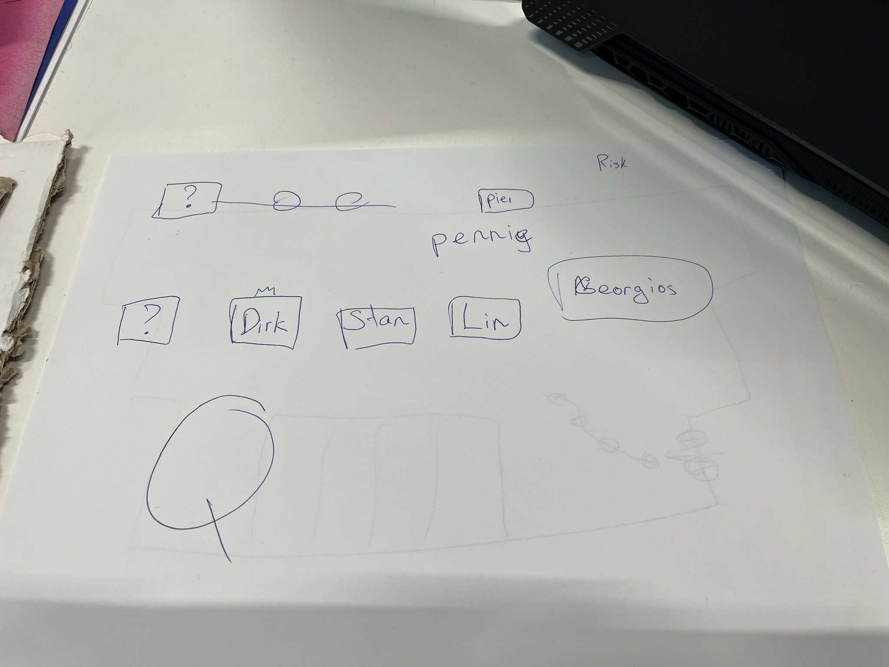
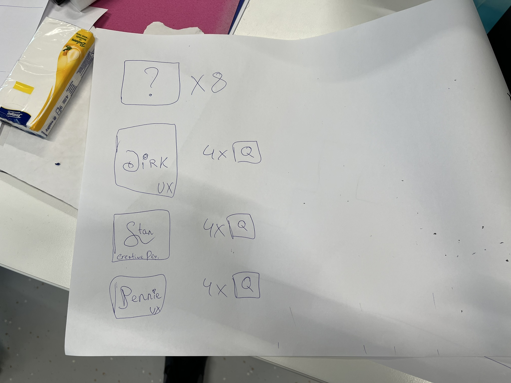
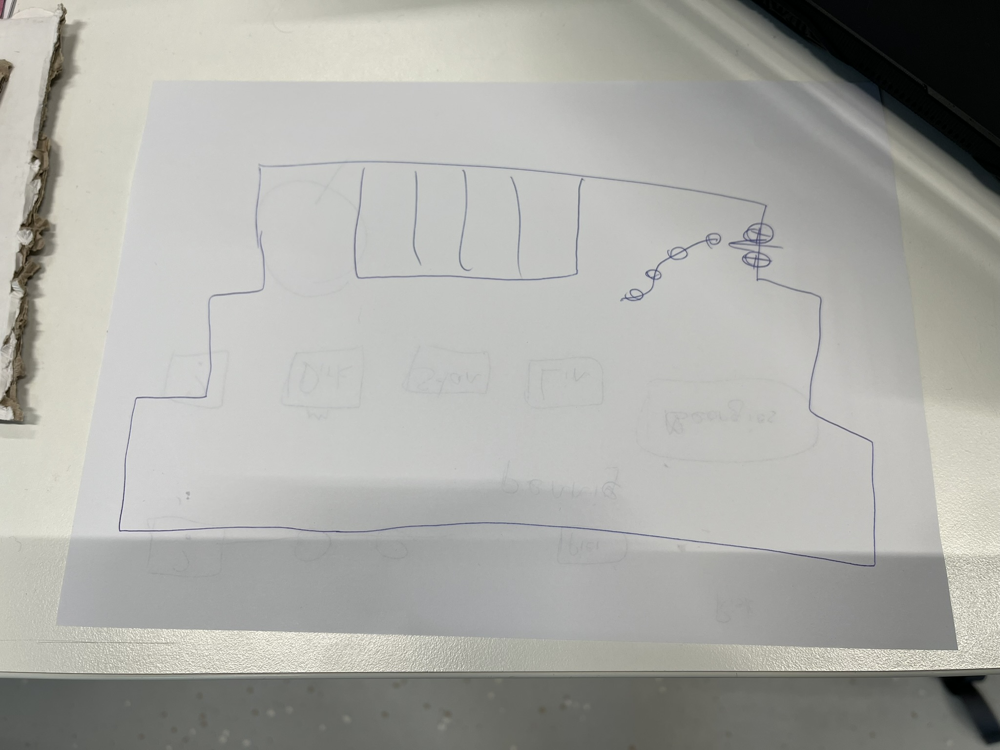
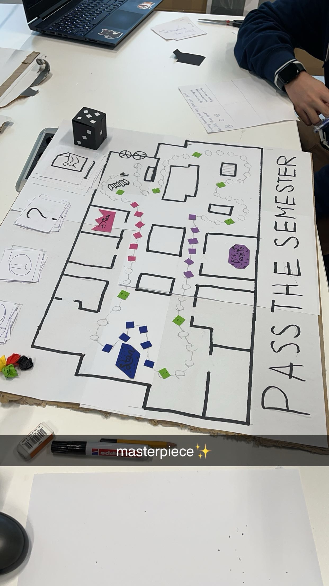
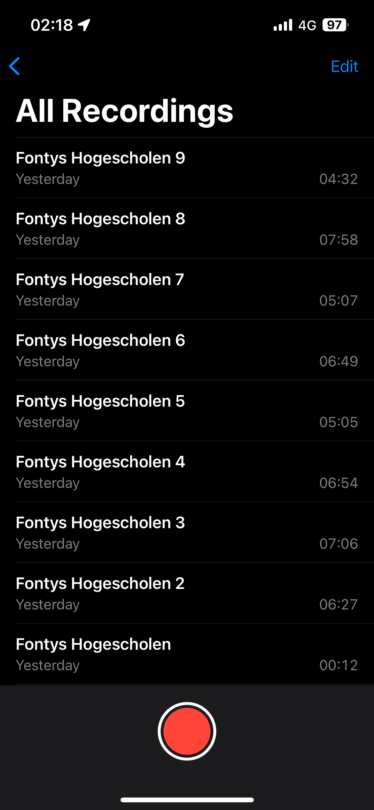
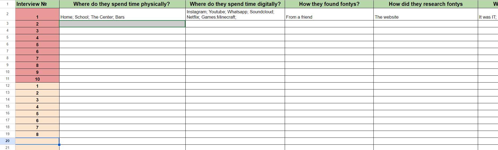

learning outcome 4: Professional standard
As part of learning outcome 4, I've embraced professional practices both individually and within a team setting, focusing on project organization, stakeholder communication, exploratory research, and reporting. One notable experience that exemplifies this was during the very first week of the semester. At the outset, I was assigned to a group comprising four second-semester students and two third-semester students. Our initial tasks included creating business cards and capturing professional photographs of ourselves. However, the most notable assignment we received that week was the creation of a board game. Inspired largely by classics like Monopoly, our group brainstormed and developed a board game we dubbed "Pass the Semester." The game featured figurines navigating through a series of fields, encountering question marks along the way. Depending on the accuracy of their answers, players received either a happy or sad smiley face. At the game's conclusion, points were tallied based on completion time, correct answers, and accumulated happy smileys. This project required meticulous planning, effective communication, and collaborative effort from all team members. From conceptualization to execution, we maintained open lines of communication, shared responsibilities, and conducted thorough research to ensure the game's success. Additionally, we compiled detailed reports outlining the game's rules, mechanics, and objectives, adhering to professional standards of documentation and reporting. In essence, our experience developing "Pass the Semester" exemplifies our commitment to professional standards, teamwork, and creative problem-solving. Through effective organization, communication, and research, we delivered a project that not only met expectations but also showcased our collective ingenuity and dedication.
  At the culmination of the week, our group's efforts were evaluated, and to our delight, our board game "Pass the Semester" emerged victorious, clinching the nomination for the best board game. The recognition our game received was a testament to the collaborative spirit, creativity, and attention to detail that our team brought to the project. We had poured our hearts into designing a game that not only entertained but also imparted knowledge and fostered engagement. Winning the board game nomination served as validation for our hard work and dedication. It reinforced our confidence in our abilities as a team and fueled our motivation to continue striving for excellence in future endeavors. This achievement underscored the importance of effective teamwork, innovative thinking, and adherence to professional standards. It was a proud moment for all of us, affirming our commitment to delivering high-quality work and making meaningful contributions to our academic pursuits.
First project
During a four-week project with Geldrops Muziek Corps, our objective was to enhance their brand recognition and engage younger audiences to join their cause. This encompassed developing a comprehensive brand guide that encapsulated their values, tone of voice, goals, and visual identity, including elements such as logos, fonts, and color palette. Additionally, we were tasked with creating a social media guide to amplify their presence on digital platforms and redesigning their website. In this project, my primary responsibility was crafting the brand guide. This involved collating inputs from my team members and ensuring that they aligned with the established brand guidelines. I meticulously curated and organized the content to reflect the essence of Geldrops Muziek Corps while maintaining consistency across all aspects of the brand. Furthermore, I closely monitored the execution of various elements to ensure adherence to the brand guide's theme. Whether it was designing promotional materials, updating social media content, or refining the website layout, I ensured that every aspect resonated with Geldrops Muziek Corps' brand identity.
Brand GuideThis project not only showcased our team's collaborative prowess but also underscored our ability to deliver impactful solutions that align with our client's objectives.
Second project
In our current project, we're tasked with developing a media campaign for "Fontys for Society," aimed at clarifying important aspects for students before they embark on their university journey. At this stage, we're deeply engaged in the research phase, where we're striving to identify students' needs and areas of uncertainty before enrolling at Fontys. Our research endeavors encompass a variety of methods, including surveys, interviews, focus groups, and data analysis. Through these avenues, we're seeking to gain insights into the challenges, concerns, and questions that prospective students may have. Some key areas of focus include understanding their expectations regarding academic programs, campus life, support services, financial matters, and career prospects. By delving into these aspects, we aim to pinpoint specific pain points and areas of ambiguity that students encounter during their decision-making process. This will enable us to tailor our media campaign to address these concerns directly, providing clear, concise information and guidance to prospective students. Ultimately, our goal is to create a compelling media campaign that not only informs but also inspires and empowers students, arming them with the knowledge and confidence they need to navigate their university journey successfully. Through rigorous research and strategic planning, we're laying the groundwork for a campaign that resonates with our target audience and drives meaningful engagement with Fontys for Society.
In our ongoing project focused on developing a media campaign for "Fontys for Society," we've taken proactive steps to gather insights by conducting interviews with current students. These interviews serve as valuable sources of firsthand information, offering unique perspectives and insights into the Fontys experience. Through these interviews, we've had the opportunity to delve into various aspects of student life at Fontys, including academic programs, campus culture, support services, extracurricular activities, and overall satisfaction with their university experience. By engaging with current students, we aim to gain a deeper understanding of their motivations, challenges, and experiences, which in turn will inform the development of our media campaign. The insights gleaned from these interviews provide us with valuable qualitative data that supplements our quantitative research efforts. By capturing the voices and narratives of actual students, we can better empathize with the target audience and tailor our campaign messaging to resonate with their needs and aspirations. Moving forward, we will continue to leverage these interviews and other research findings to inform the strategic direction of our media campaign, ensuring that it effectively addresses the concerns and interests of prospective students and contributes to a more informed decision-making process.
Right now I extract answers from interviews to make conclusions about User Experience at Fontys, so we sum up all the results in this form and then we are going to discuss it.
